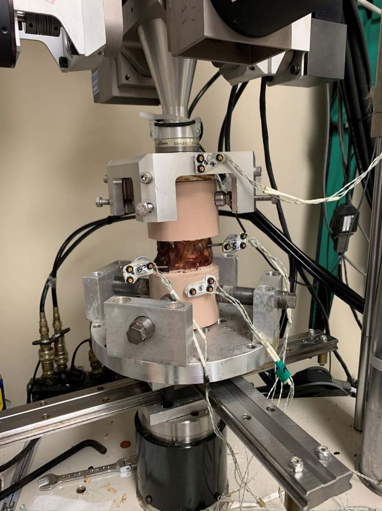
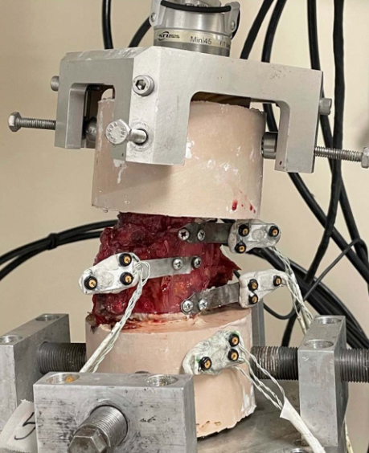
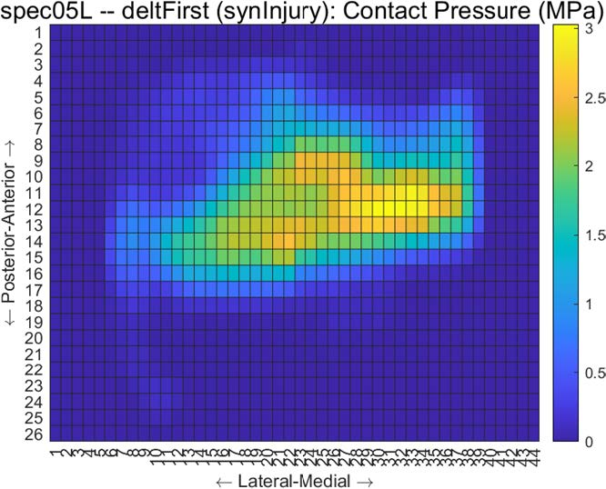
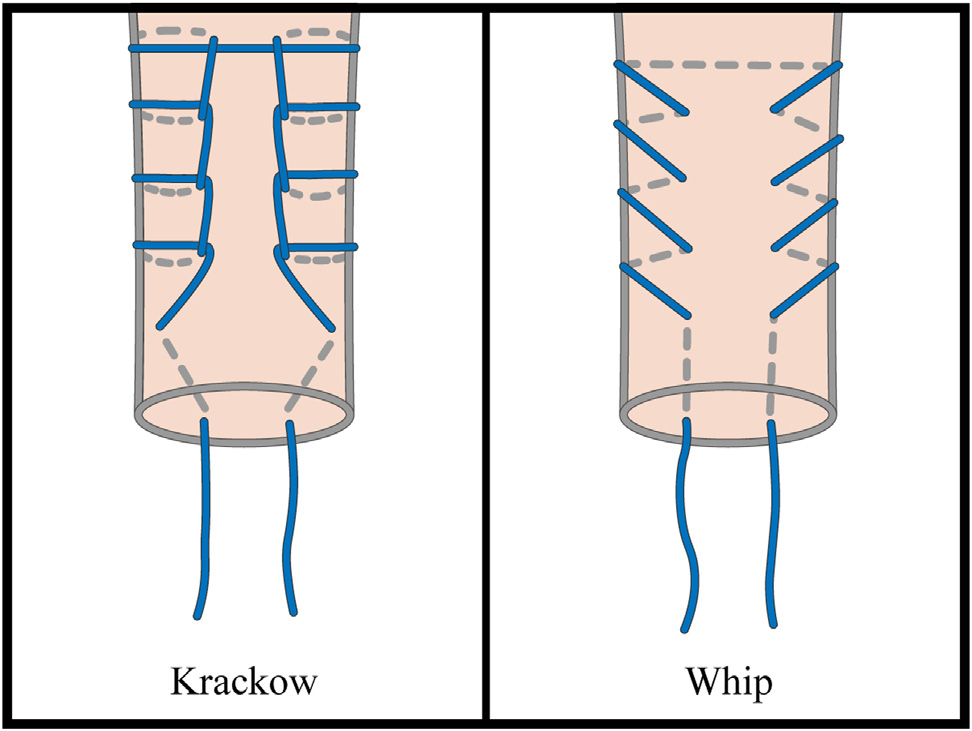

Peer-Reviewed Publications

Passive Ankle and Hindfoot Joint Kinematics Within a Robot-Driven Tibial Movement Envelope
AH Le, AC Peterson, JA Larrea Rodriguez, T Miyamoto, F Nickisch, AL Lenz
Journal of Orthopaedic Research, In Preparation

Biomechanical Comparison of Anterior Cervical Plate Fixation Versus Integrated Fixation Cage for Anterior Cervical Discectomy and Fusion
TP Murphy, JD Tran, DF Colantonio, AH Le, DR Fredericks, WB Roach, J Chung, AJ Pisano, SC Wagner, MD Helgeson
Clinical Spine Surgery, April 2024

Biomechanical Analysis of Multilevel Posterior Cervical Spinal Fusion Constructs
TP Murphy, DF Colantonio, AH Le, DR Fredericks, CD Schlaff, E Holm, AS Sebastian, AJ Pisano, MD Helgeson, SC Wagner
Clinical Spine Surgery, June 2023

Biomechanical Analysis of Multilevel Posterior Cervical Spinal Fusion Constructs
DF Colantonio, AH Le, AJ Pisano, JM Chung, SC Wagner, DR Fredericks, WB Roach, CD Schlaff, A Dill, MD Helgeson
Spine, April 2023

Subcortical Backup Tibial Fixation in Anterior Cruciate Ligament Reconstruction has Similar Maximal Strength to Current Techniques
DF Colantonio, RK Kicklighter, AH Le>, MA Nowicki, MA Posner, LF Zhou, SM Gee
Arthroscopy, Sports Medicine, and Rehabilitation, February 2023

All-Suture Suspensory Button Has Similar Biomechanical Performance to Metal Suspensory Button for Onlay Subpectoral Biceps Tenodesis
DF Colantonio, CJ Tucker, TP Murphy, PK Mescher, AH Le, RM Putko, ER Holm, R Weishar, TK Vippa, TN Rubic, ES Chang
Arthroscopy, Sports Medicine, and Rehabilitation, December 2022

Biomechanical Changes in the Ankle Joint after Syndesmosis and Deltoid Injury and Subsequent Repair in a Cadaveric Model
Lundy, DF Colantonio, AH Le, RC Lee, AS Piscoya, E Holm, TT Eckel
Foot & Ankle Orthopaedics, November 2022

Biomechanical Comparison of Anatomic Restoration of the Ulnar Footprint vs Traditional Ulnar Tunnels in Ulnar Collateral Ligament Reconstruction
ES Chang, AH Le, AM Looney, DF Colantonio, WB Roach, MD Helgeson, DM Clark, DR Fredericks, S Nagda
American Journal of Sports Medicine, April 2022

Intramedullary Unicortical Button and All-Suture Anchors Provide Similar Maximum Strength for Onlay Distal Biceps Tendon Repair
DF Colantonio, AH Le, LE Keeling, SE Slaven, T Vippa, MD Helgeson, ES Chang
Arthroscopy, February 2022

A Biomechanical Comparison of High-Tensile Strength Tape Versus High-Tensile Strength Suture for Tendon Fixation Under Cyclic Loading
AH Le, WB Roach, TC Mauntel, BD Hendershot, MD Helgeson, DF Colantonio, DR Fredericks, SE Slaven, AJ Pisano, LE LeClere
Arthroscopy, September 2021